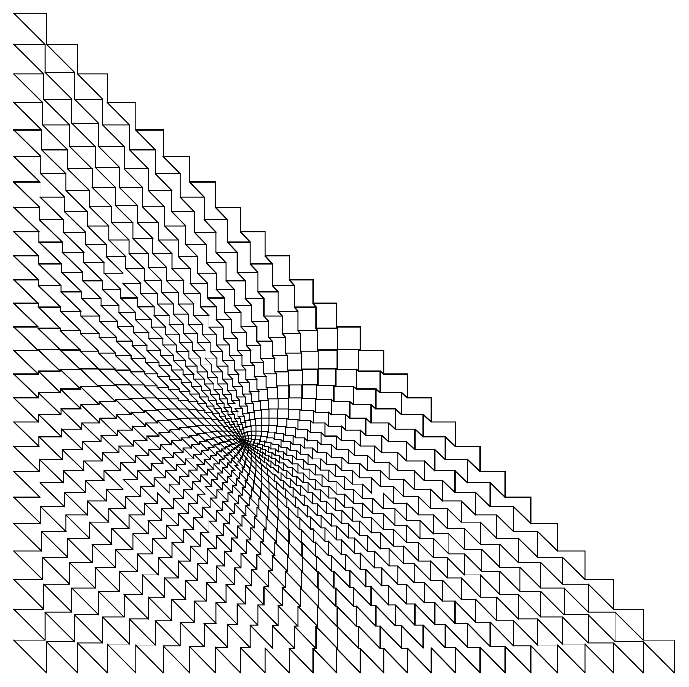
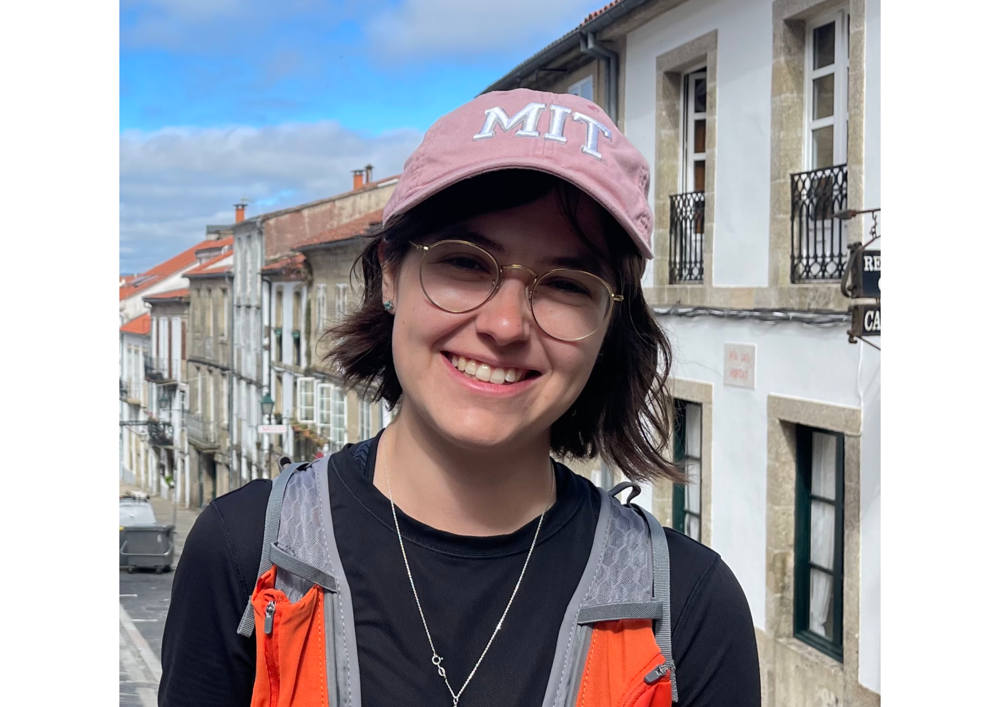
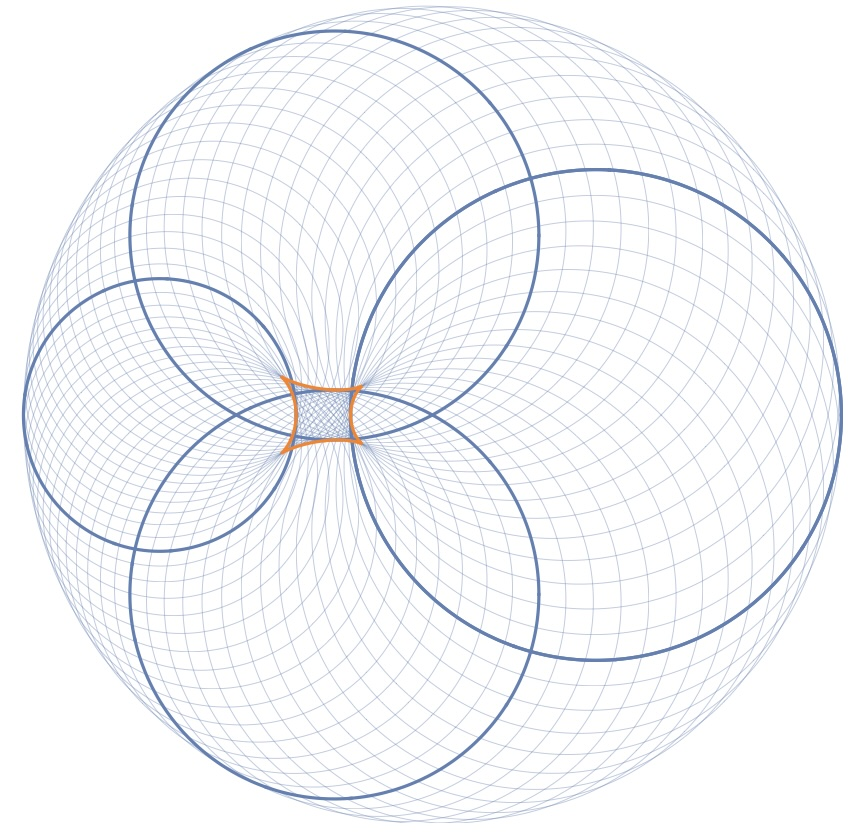
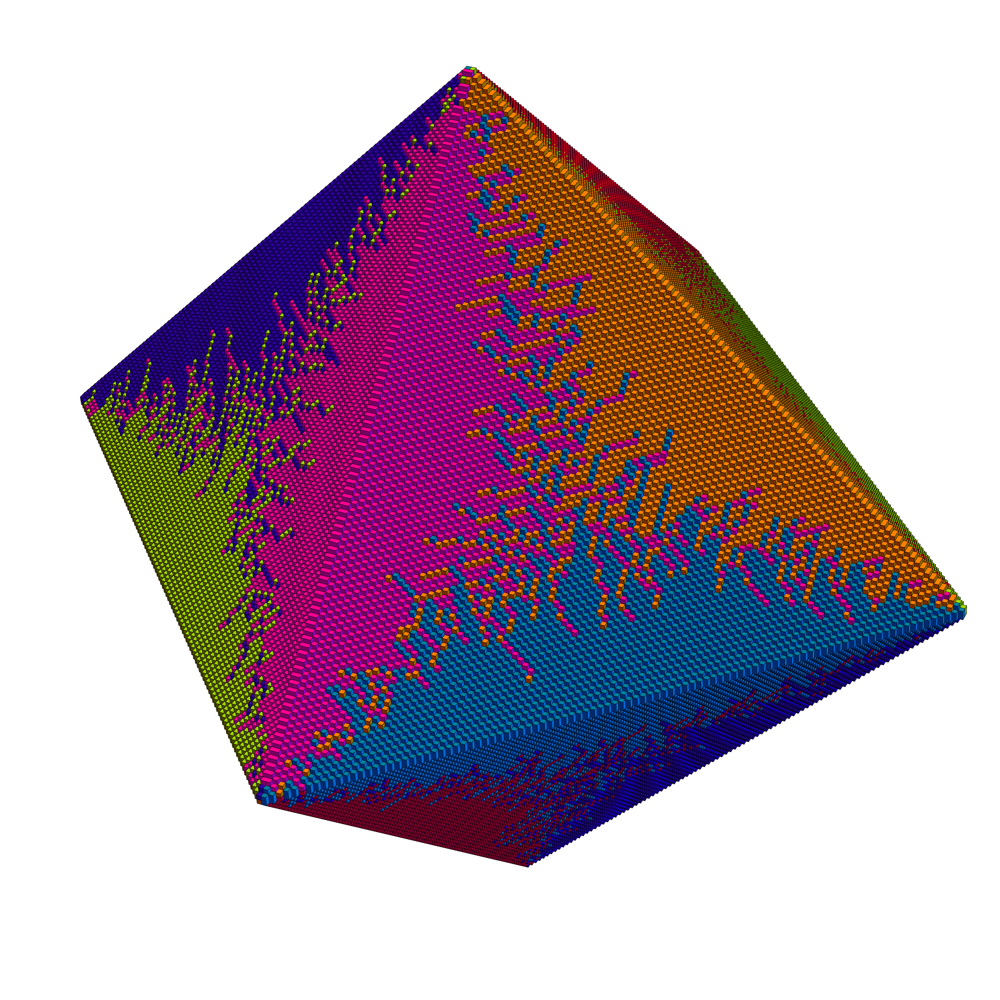
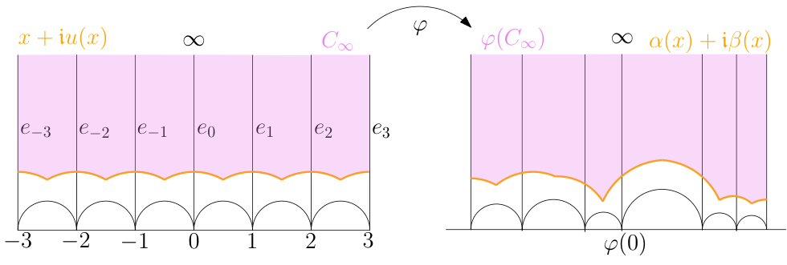

Catherine Wolfram
I'm currently a postdoc at ETH Zurich, in the group of Yilin Wang. Last year, I was an NSF postdoc and Gibbs Assistant Professor at Yale. I completed my PhD in math at MIT in 2024, advised by Scott Sheffield, and before that I was an undergraduate at the University of Chicago. I'm interested in various topics related to complex analysis, probability, and geometry.
Email: cwolfram at math dot ethz dot ch OR catherine.wolfram at yale dot edu.
[Note: I will not receive messages sent to my old MIT email address!]

Research
For slides and recordings of talks, see here →



Circle homeomorphisms with square summable diamond shears
2024
Int. Math. Res. Not. (IMRN), Vol. 2024, 17.
Upcoming travel/talks
Some upcoming talks/travel (not always up to date!). See here for a more complete list.
- March 5-20, 2027 Quantum Fields, Probability, and Geometry program, Institut Mittag Leffler, Djursholm, Sweden.
- September 21-25, 2026. Cambridge equinox probability conference, Cambridge, UK.
- July 6–10, 2026. Random Explorations: From Random Walks to Random Geometry (Greg Lawler's 70th birthday conference), IMSI, Chicago, IL.